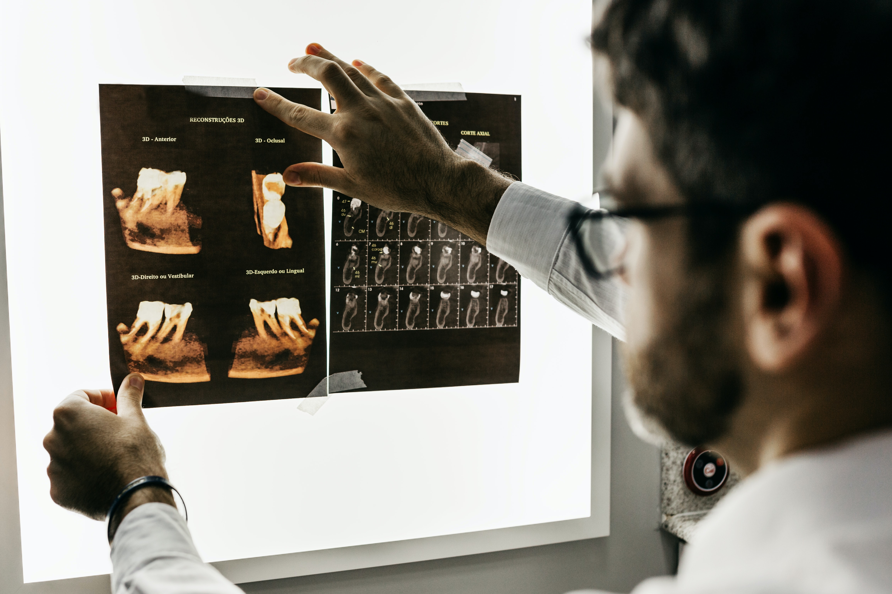

.png)

|
 |
Overview
Dental care is an essential part of maintaining overall good health both in children and in adults.
At Health Care Unit, we believe that everybody should be able to receive the best possible dental care and treatments.
With a large array of skills and experience on hand, No Matter your Dental needs, from general cleanings, exams, restorative & implants, to
cosmetic teeth whitening, and orthodontic treatments, our family-friendly dentists and staff are here for you and at your service. |
General dentistry includes a number of treatments designed to keep your teeth and gums healthy.
Minimize the need for expensive and painful dental treatments with recommended regular general
dental visits every 6 months, ensuring good oral hygiene and dental health. No matter your dental
needs, from general cleanings and exams, our dental staff and are here for you.
Who wouldn't want a beautiful smile? Our dental surgeons are skilled in a wide range of cosmetic dentistry. We offer a wide range of services to give you the smile you've always wanted. Ranging from veneers to crowns, fillings, and all the way to complete reconstructions, we are able to provide you with the smile you deserve to confidently wear.

Our services are designed to provide great care for you and your family with a focus on comfort and quality of care designed for adults and pediatric dentistry. It's essential to establish good dental care early in life and children who have positive dental experiences are likely to continue taking care of their teeth. We provide kids with a fun and safe atmosphere where they will enjoy their regular visits to the dentists.
Do you find yourself in pain due to your tooth? Did you experience a chipped or broken tooth? Did you suffer from gum irritation or lost a crown? If so, do not worry! At Health Care we are able to provide emergency treatment to alleviate and manage these issues. Quick and effective treatment can sometimes save a tooth that might otherwise have been lost as a result due dental tooth bleeding or infections. If you find yourself in an emergency situation, contact us immediately and we'll ensure one of our dentists is available and provide you with an appointment to be seen as soon as you arrive.
Dental implants are the only dental restoration option that preserves natural bone, actually helping to stimulate bone growth. When performed by one of our experienced dental surgeons, dental implant surgery is one of the safest and most predictable procedures in dentistry. Should you feel that you need or have more inquiries about dental implants, it is recommended to consult our dental surgeons by booking an appointment to discuss and evaluate your dental requirements.
Teeth Whitening can provide a brighter, younger looking smile. Over the past several years we have helped thousands of patients achieve the smile of their dreams. We offer various forms of teeth whitening procedures, the In-office Bleaching, Chair-side Bleaching and Power Bleaching are all known as whitening treatments done by a dentist. This is a simple procedure that can be done in the dental office with the guidance of a dentist within 1 hour.
|
|
Routine Dental Check Up
Our dental clinics provide complete dental hygiene treatments, which |
Other services offered
|
 |
|
|
Dental Health and Aging
One of the biggest misconceptions about dental health and aging is that |